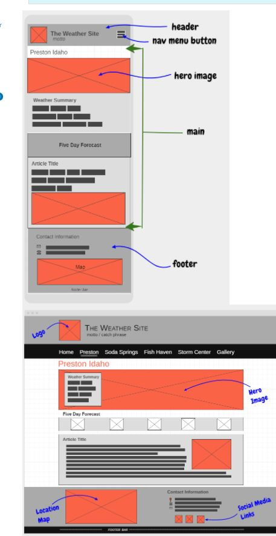

Site Name
This site is going to be called rainbowweathersite.com
Site Purpose
The main purpose of the rainbowweather website will be to keep the community with up-to date weather information. The rainbowweather website will service potential customers locally and all over the world. Our corporate website will contribute to expansion and growth opportunities that success is achieved.
Target-Audience and Scenarios
The focus for this website will be to encourage young people from 12 years and older to develop knowledge in modern technology. We will also help elderly people in the community who are very interested in gaining computer knowledge.
Site Map

Color Scheme
Color Scheme describes the background, text, links, accent(s), highlights and logos of the rainbowweathersite.com.
Typography
Describes the fonts, font sizes, styles and line height used in the rainbowweathersite.com
Wireframe Sketches

Website Logo
rainbowweathersite.com